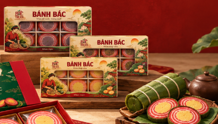
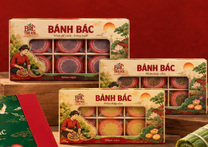

01
Khám phá Giang Xá
Tuyến kể chuyện tương tác theo từng cảnh, giúp người xem đi qua làng xưa, di tích và lớp văn hóa gắn với Lý Nam Đế.
Một hành trình để người xem bước vào bối cảnh làng Giang Xá, tìm hiểu câu chuyện gắn với Lý Nam Đế, rồi tự tay thử “làm” Bánh Bác qua mini game tương tác.
Bản này được làm theo hướng giàu chi tiết hơn: logo sạch hơn, cấu trúc rõ hơn, có tuyến kể chuyện, có game làm bánh, có khu vực ảnh – video để bạn tiếp tục đắp thêm nội dung thật sau này.

Tuyến kể chuyện tương tác theo từng cảnh, giúp người xem đi qua làng xưa, di tích và lớp văn hóa gắn với Lý Nam Đế.
Mỗi nhánh có thể mở thêm một “cuộn sớ” với nội dung chi tiết hơn, giống như đọc một đoạn tư liệu được minh họa.
Người xem chọn nguyên liệu, sắp xếp công đoạn và hoàn thiện phần trình bày để tạo nên một trải nghiệm sản phẩm thú vị hơn.
Phần này được làm theo tinh thần kể chuyện kiểu visual novel / story game nhẹ: người xem nhấn đi tiếp, mở lựa chọn và theo dõi diễn tiến từng cảnh. Nội dung giữ tông kể chuyện, nhưng vẫn nhắc rõ đây là những dấu ấn văn hóa và câu chuyện được lưu truyền.
Mỗi chuyến đi đều bắt đầu từ một cánh cửa. Với Bác Trà Ký, cánh cửa ấy là Giang Xá – nơi chiếc Bánh Bác được nhớ đến không chỉ như một món quà, mà như một phần ký ức địa phương.
“Nếu muốn hiểu Bánh Bác, trước hết hãy thử bước chậm qua Giang Xá xưa – nơi những lớp ký ức, lễ hội và truyền thuyết vẫn còn được kể lại trong đời sống hôm nay.”
Mỗi cảnh có hai “mảnh ghép” nhỏ để người xem chủ động mở ra. Đây là cách làm cho phần lịch sử – văn hóa bớt nặng chữ và có cảm giác như đang khám phá từng lớp chuyện.
Ngoài tuyến chuyện trên, bạn vẫn có thể mở nhanh hai cuộn sớ riêng để xem khung nội dung tổng quan cho Giang Xá xưa hoặc Truyền thuyết bánh dâng vua.
Game được chia thành ba chặng: chọn nguyên liệu, xếp đúng thứ tự công đoạn và hoàn thiện cách trình bày. Nó không thay thế quy trình làm bánh thật, nhưng giúp người xem ghi nhớ những chi tiết cốt lõi về sản phẩm.
Hãy chọn những nguyên liệu phù hợp nhất với câu chuyện của Bánh Bác truyền thống. Bạn cần chọn đúng 4 nguyên liệu.
Kéo thả các bước dưới đây để tạo thành một trình tự hợp lý cho việc hình thành chiếc Bánh Bác.
Hãy chọn cách kết thúc phù hợp nhất với tinh thần trải nghiệm của Bác Trà Ký.
Khi hoàn thành, khu vực này sẽ hiện lời chúc mừng và gợi ý cách nối game với trải nghiệm thật của BTK.

Mình giữ sẵn một khu để bạn có thể thêm video reel, video cơ sở làm bánh hoặc clip kể chuyện Giang Xá sau này. Nếu chưa có video, khối này vẫn hiển thị tốt bằng poster tĩnh.

Hãy dùng phần này để gắn video về làng Giang Xá, công đoạn làm bánh hoặc một clip motion ngắn theo concept “Mở Bánh – Mở Chuyện”.
Microsite này nên đóng vai trò là một trải nghiệm văn hóa số của Bác Trà Ký. Sau khi người xem đọc chuyện và chơi game, hãy đưa họ quay về Beacons, menu hoặc kênh bán hàng chính thức.